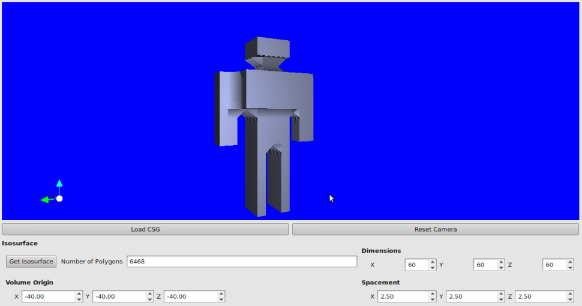

This work is a study on Constructive Solid Geometry (CSG), which is a method to construct meshes by use of operations on sets (union, intersection, difference). In this implementation, the CSG primitives are described by implicit functions evaluated into a regular grid. A good feature of this representation is the ability to compute the set operations by evaluating the implicit functions on the discretized points of the grid. With this representation we extract the isosurface of the solid generated using the marching cubes algorithm and store the result in a half-edge data structure for future drawing.
The marching cubes algorithm used in this work is a variation of the aproach by tetrahedrons written by Paul Bourke, the half-edge used is the one provided in CGAL and the implementation of trees used to store the CSG operations is the one written by Kasper Peeters.
In this first version, the system constructs the solid by reading a file with the definitions of primitives and operations and because of this the examples are simple. In future releases the goal will be to construct the solid interactively.
Google Code
Screenshots
